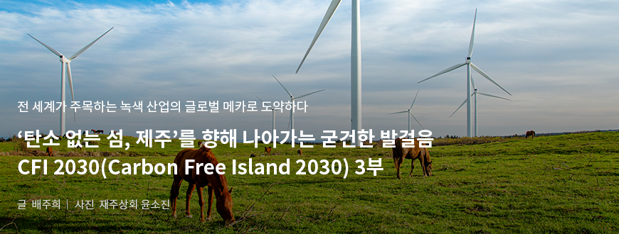
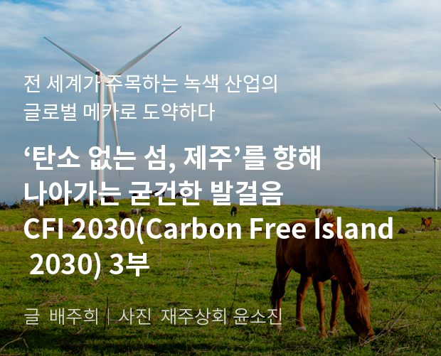
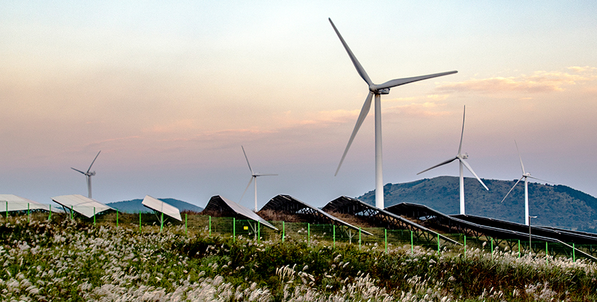
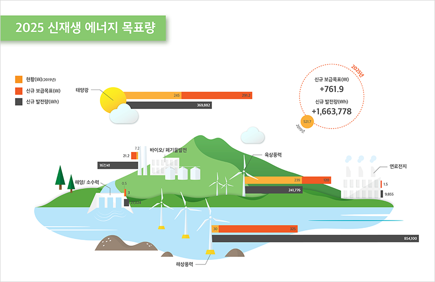

기획취재콘텐츠
- Home
- 제주라이프
- 기획취재콘텐츠
CFI 2030(Carbon Free Island 2030) 3부새로운 글




에너지 자립과 청정한 자연을 위한 노력, 신재생 에너지 산업
사방을 둘러싼 바다, 따뜻하게 내리쬐는 햇빛, 때론 잔잔하게, 때론 세차게 부는 바람, 그 바람에 수시로 높낮이가 바뀌는 파도. 이 모든 것은 제주도에서 오감으로 만끽할 수 있는 자연의 모습이다. 그리고 동시에 제주가 지닌 풍성한 신재생 에너지 자원이기도 하다. 제주도는 이런 자연 자원을 기반으로 오래전부터 신재생 에너지를 연구 개발, 활용해왔다.
특히 제주도는 1970년부터 풍력 발전을 시작하여 그 역사가 거의 50년에 이른다. 오랜 시간을 거치면서 현재와 같은 풍력 발전 단지의 개념과 원형을 만든 셈이다. 80년대부터는 태양광 발전을 시작했고, 풍력과 태양광 모두 초기엔 개발·연구를 중심으로 하다 90년대 후반에 대한민국 최초의 상용 풍력발전 단지 조성을 시작으로 대한민국 풍력발전의 메카로 성장해나갔다.

- 제주도는 풍부한 일조량과 바람을 자원으로 일찌감치 신재생에너지를 발굴‧개발해왔다.
사진은 풍력발전기와 태양광 패널이 설치되어 있는 가시리 국산화 풍력 발전단지.
제주에너지공사 친환경 사진공모전 수상자 임한순씨 작품. ⓒ제주에너지공사 제공 -
사진은 풍력발전기와 태양광 패널이 설치되어 있는 가시리 국산화 풍력 발전단지.
제주에너지공사 친환경 사진공모전 수상자 임한순씨 작품. ⓒ제주에너지공사 제공 -
- 동복리 육상 풍력 발전 단지 전경 ⓒ제주에너지공사 제공 -
현재 제주에 있는 풍력 발전 단지의 에너지 보급량은 육상과 해상 합산 290MW, 태양광 발전 보급량은 260MW 정도로 대부분의 비중을 차지하는 풍력과 태양광 양대 축의 에너지원 구조를 갖추고 있다. 기타 에너지원의 종류로는 가축 분뇨에서 발생하는 바이오가스, 폐목재 등의 폐기물, 태양열등도 활용하고 있으며, 기타 시범 실증사업으로 파도의 움직임으로 전기를 생산하는 파력 발전 등도 함께 추진하고 있다. 이처럼 환경 자원을 다양하게 활용하는 제주의 전체 신재생에너지 보급률은 2019년 기준 전국 평균인 8%대를 훨씬 웃도는 14.03%로, 대한민국에서 신재생에너지 보급률이 가장 높은 지역으로 앞서나가고 있다.
- 해상 풍력 발전 단지가 조성되어 있는 신창풍차해안도로
제주에너지공사 친환경 사진공모전 수상자 김태호씨의 작품. ⓒ제주에너지공사 제공 -
제주에너지공사 친환경 사진공모전 수상자 김태호씨의 작품. ⓒ제주에너지공사 제공 -
제주도가 풍력에너지산업에 특화된 이유는 제도적 기반이 탄탄하게 마련되어 있기 때문이다. 제주도는 제주도 특별법을 통해서 제주 육·해상 풍력발전에 대한 발전사업 허가 권한을 산업통상자원부장관에서 제주도지사로 이양받았고, 지역적 특성을 반영한 별도의 허가 기준과 지구지정에 관한 조례와 고시를 제정·도입했다. 지구지정이란 풍력발전에 적합한 부지나 해안 마을을 미리 조사‧지정하는 것으로, 지구 지정된 지역 마을을 대상으로 후보지 공모를 받고, 이후 평가, 심의 등 풍력단지 조성 사업을 진행할 수 있도록 하는 법적 근거다. 이와 같은 제도는 제주에서 최초로 정착되었으며, 유사한 전국적 제도로 계획입지제도가 있지만, 법률 개정의 문제로 실제로 잘 활용은 되지 않는다고.
사실 풍력 발전은 규모가 커서 사업 속도를 빠르게 진행하기 쉽지 않다. 계획 발표 및 진행 과정에서 필요한 자금도 막대하고, 광범위한 부지가 필요한 것도 있지만 무엇보다 주민 수용성을 고려해야하기 때문이다. 풍력 발전 사업 시행을 주로 담당하는 제주에너지 공사가 가장 많이 신경을 쓰는 부분도 주민 수용성을 높이기 위한 활동이다. 이전의 사업 허가 방식은 사업자가 마을 이해관계자 협의 없이 사업 허가를 신청하는 등 마을 주민과의 갈등을 빚는 경우가 많았는데, 지구지정 조례를 적용하여 처음부터 마을들을 대상으로 후보지 공모를 통해서 지원을 받고, 이해관계자 협의와 심의 등을 거치는 방식으로 진행하고 있다. 준비된 제도를 바탕으로 갈등이 야기하는 비용 및 시간 손실을 최소화 할 수 있었던 것.


2025 신재생 에너지 목표량 (신규 보급목표 +761.9(MW), 신규 발전량 +1,663,778(MW))
| 구분 | 현황(MW) 2019 | 신규 보급목표(MW) | 신규 발전량(MW) |
|---|---|---|---|
| 태양광 | 245 | 291.2 | 369,882 |
| 바이오/폐기물발전 | 7.2 | 21.2 | 167,141 |
| 육상풍력 | 239 | 120 | 241,776 |
| 연료전지 | - | 1.5 | 9,855 |
| 해양/소수력 | 0.5 | 3 | 21,024 |
| 해상풍력 | 30 | 325 | 854,100 |

이렇듯 양적, 질적으로 확장되는 신재생 에너지 산업이지만, 여기서 추가로 파생되는 산업이나 서비스에는 부분적으로 한계가 존재한다. 파생 산업에는 주로 발전 설비의 유지보수가 큰 비중을 차지하고, 부가가치가 높은 제조업이나 발전 산업에 병행되는 금융, 경제, 경영, 법률 서비스적인 측면은 아직 제도 마련과 인력 양성 등이 필요한 상황이라고. 하지만 전문가는 이들 분야에 대한 신재생 에너지 시장의 확장성은 당연히 존재하며, 파생 산업을 키우기 위해서는 기술적 문제도 해결되어야 하지만 중앙 정부의 예산 지원과 법 제도적 지원이 필수라고 말했다.
탄소 없는 섬으로 나아가는 멈추지 않는 발걸음
- 신창리 풍력 발전 단지
제주에너지공사 친환경 사진공모전 수상자 이승건씨의 작품. ⓒ제주에너지공사 제공 -
제주에너지공사 친환경 사진공모전 수상자 이승건씨의 작품. ⓒ제주에너지공사 제공 -
제주도는 지금 전기차와 신재생 에너지 산업, 양대 축을 두 다리 삼아 ‘탄소 없는 섬’이라는 비전을 향해 뚜벅뚜벅 걸어 나가고 있다. 두 산업의 발전상에서 알 수 있듯이 제주도는 법·제도, 계획·실행, 도민 의식 등 모든 면에서 대한민국을 선도하는 자리에 서 있다. 선도자의 앞에는 답을 알 수 없는 문제들이 가득하지만, 그가 걸어간 길은 분명 뒤따라오는 사람들에게 이정표가 되기 마련이다. 아마도 그것이 에너지 전환 1번지인 제주도의 자부심이고, 책임이자 의무가 아닐까.
다음글